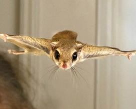
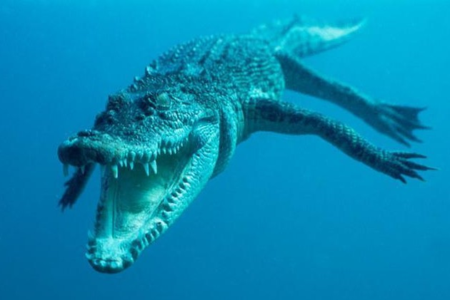
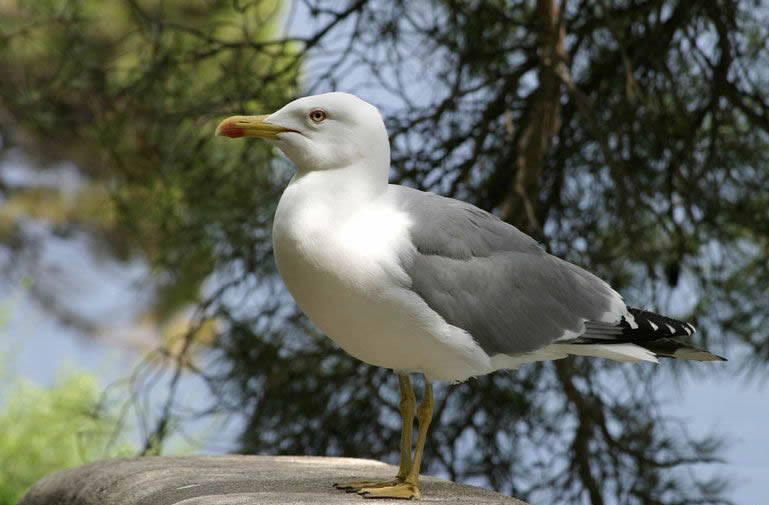

动物之最
最小的蜘蛛是在巴拿马的热带森林里发现的，它体长0.8毫米。
世界上最小的鸟儿是“微型”蜂鸟，它体重2克，从嘴尖到尾尖长5厘米。
在泰国设有“猴子学校”，训练猴子采摘椰子。一只训练有素的猪尾蛮猴一天之内可以摘到1400个椰子。
鼩鼱都被认为是最小的哺乳动物：成年体重2克，体长约为5厘米（若连尾则更长一些）。
几年以前，在泰国的热带丛林里发现了“最小哺乳动物”这一称号的新的争夺者——小飞鼠。它体重约为2克，体长3厘米，头长11毫米，翼展5.5厘米，以小昆虫为食。
2007年春天，世界上最老的“狗寿星”在奥地利的布里斯班去世，终年32岁，相当于人活了224岁。
产奶量最大的哺乳动物显然是鲸了。一条蓝鲸在哺乳期里每天可产奶430升，相当于最好的奶牛产奶量的5倍。
津巴布韦的三只非洲象创造了这种动物远距离游泳的纪录。它们连续游了不下于30小时，行程超过35公里。
在所有动物中，名称最古怪的要算生活在夏威夷的卡乌阿伊岛上某些洞穴里的一种盲蜘蛛了。这就是无眼大眼蛛。原来，根据各方面的特征它都属于大眼蛛科，只是由于它乔居洞穴，造成双目失明，空留下“大眼”之称。
最大的爬行动物——湾鳄，它的外形像蜥蜴，最长达7米多，重1.6吨。
蝙蝠不是鸟类，是哺乳动物。
一只成年猎豹能在几秒之内达到每小时115公里。
世界上最大的鸟是鸵鸟。如果是飞行的鸟，是信天翁。
世界上最大的蝴蝶是凤蝶大雁飞行排成人字或一字，是为了长途飞行而借用前面大雁的翅膀煽动时的气流。鹤一只脚站立是在轮换著休息。
生长速度最慢的动物是一种生活在北大西洋的深海蚌。它100年才能长8毫米。